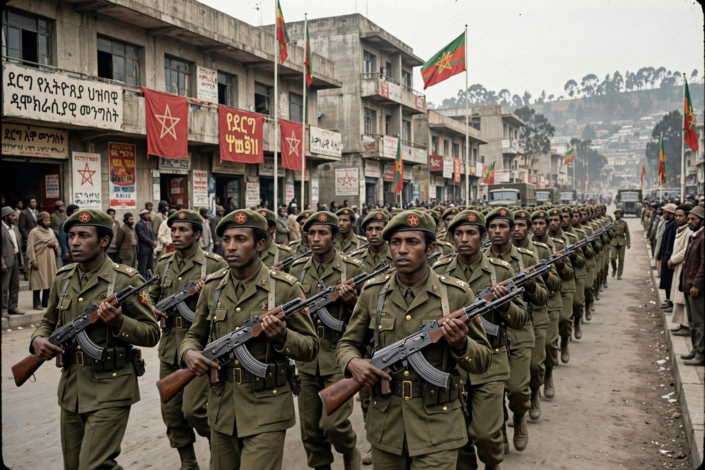

The Derg (Amharic: ደርግ, derg, "committee" or "council") was the military junta that ruled Ethiopia from 1974 to 1987. Formally known as the Provisional Military Administrative Council (PMAC), it overthrew Emperor Haile Selassie on 12 September 1974, ending the centuries-old Ethiopian monarchy, and established a Marxist-Leninist regime led from 1977 by Mengistu Haile Mariam. Its rule was marked by the Red Terror, famine, and prolonged civil war.
| Derg | |
|---|---|
 Ethiopian soldiers parading in Addis Ababa during the Derg era Derg military parade, Addis Ababa | |
| Also known as | Provisional Military Administrative Council |
| In power | 12 September 1974 – 22 February 1987 |
| Leader | Mengistu Haile Mariam (1977–1987) |
| Ideology | Marxism-Leninism |
| Successor | People's Democratic Republic of Ethiopia |
The Derg originated in a series of army mutinies in early 1974 over pay and conditions, which merged with wider unrest: drought and the concealed famine in Wollo, fuel-price protests, and strikes. A coordinating committee of junior officers — the Derg — gradually accumulated power, arresting imperial officials and, on 12 September 1974, deposing Haile Selassie, who died under house arrest the following year. The junta's early slogan was "Ethiopia First" (Ityopya tikdem); it soon adopted an explicitly Marxist-Leninist programme of nationalisation, land reform (abolishing the feudal rist and gult tenures), and villagisation.
In February 1977 Mengistu, having eliminated his rivals Tafari Benti and Atnafu Abate, launched the Red Terror (Qey Shibir) against the rival leftist Ethiopian People's Revolutionary Party and other groups. Over the next eighteen months thousands — most estimates range from tens of thousands of deaths — were killed by security forces and armed neighbourhood associations (kebeles), with bodies left in the streets of Addis Ababa. Amnesty International and Ethiopian researchers have documented mass arrests, torture, and extrajudicial executions.
The Derg faced simultaneous conflicts: the Ogaden War with Somalia (1977–78), in which Ethiopian forces backed by the Soviet Union and Cuba repelled the invasion; a long-running war of independence in Eritrea; and insurgencies by the Tigray People's Liberation Front and the Oromo Liberation Front. The government's policies contributed to the catastrophic famine of 1983–85, which killed an estimated hundreds of thousands and prompted the Live Aid concerts and a global humanitarian response.
In 1987 the Derg was formally dissolved and replaced by the People's Democratic Republic of Ethiopia, a civilian Marxist-Leninist state still led by Mengistu. Military pressure from the Eritrean and Tigrayan rebels, combined with the end of Soviet support, forced Mengistu to flee in May 1991; the EPRDF coalition entered Addis Ababa shortly after. Mengistu was later sentenced to death in absentia by an Ethiopian court for genocide and crimes against humanity.
Categories: Government of Ethiopia · Military dictatorships · Communist states